Professional Guide to Managing Your Practice with Qhali
1. Secure Login to Your Dashboard
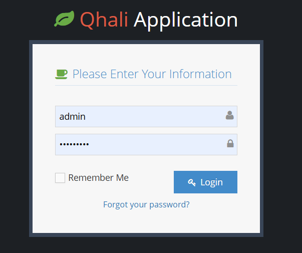 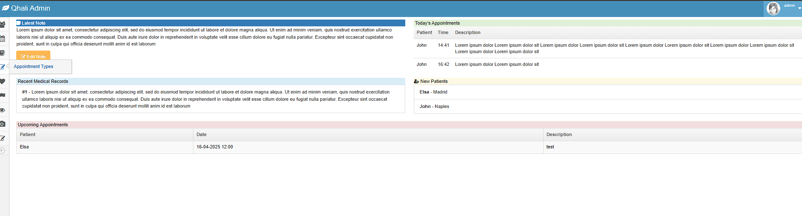Access your account with secure login credentials. The professional dashboard offers an overview of your practice, upcoming appointments, and quick access to essential functions.
2. Manage Users and Practice Locations
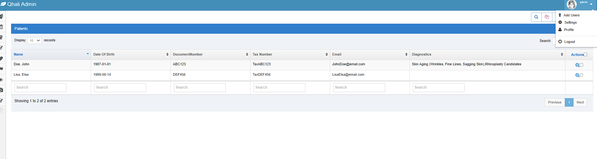 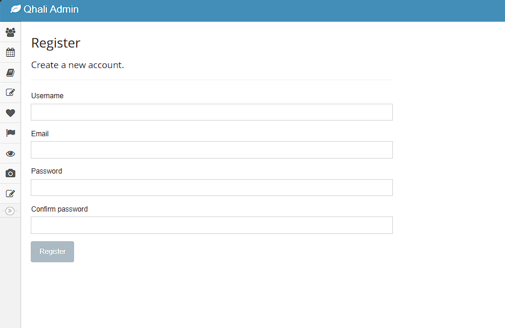 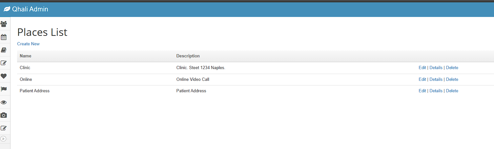From the admin menu, efficiently add new practitioners, assistants, or administrative users. Configure practice locations to streamline patient bookings and resource management.
3. Add and Manage Patient Profiles
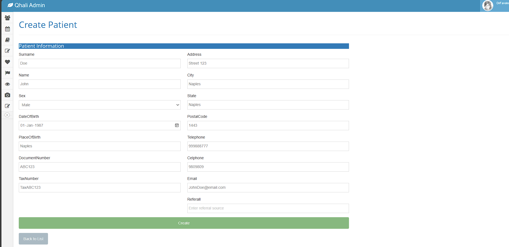 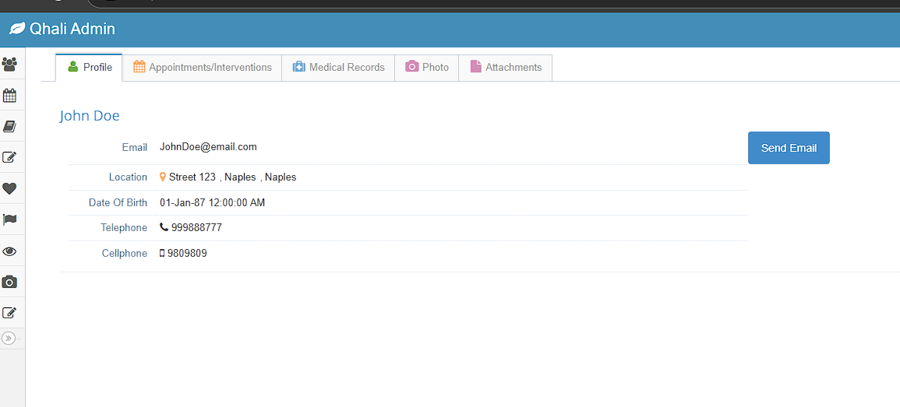Create detailed patient profiles capturing essential demographic, clinical, and contact information. Maintain comprehensive records for safe, personalized care.
4. Access and Update Patient Information
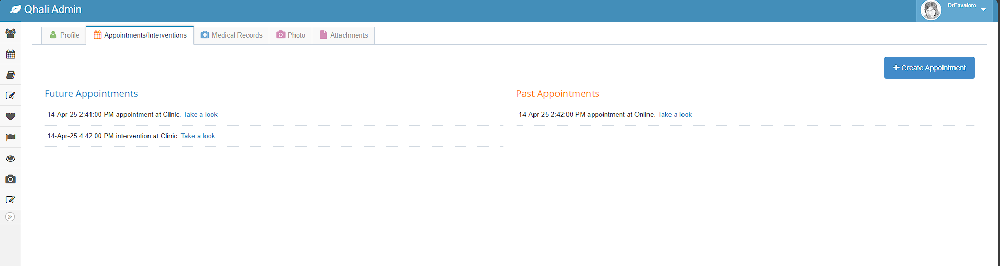 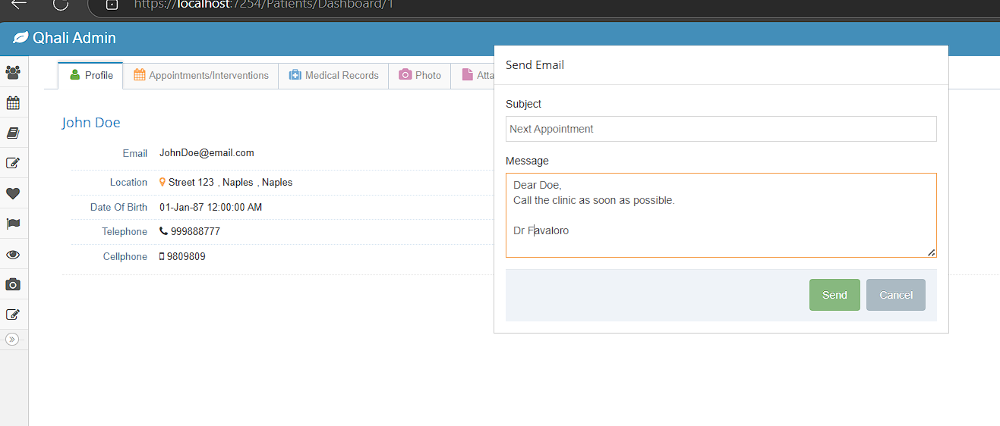
Quickly review each patient’s appointment history, email correspondence, and medical records from a single, unified profile.
5. Schedule Appointments and Interventions
 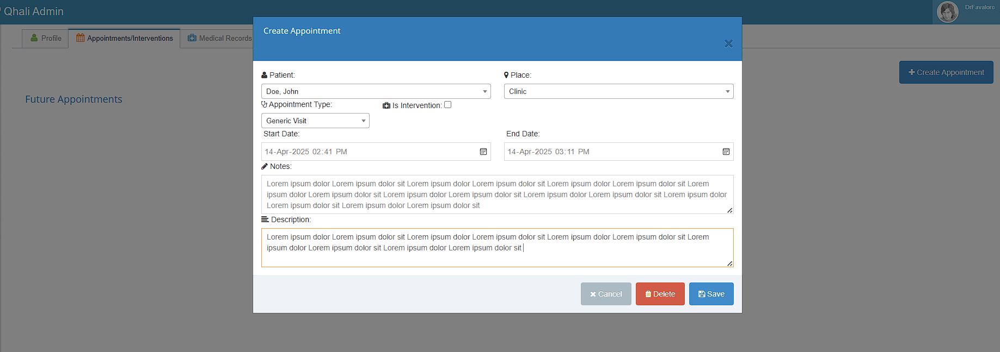
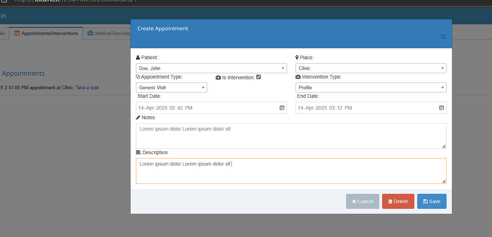
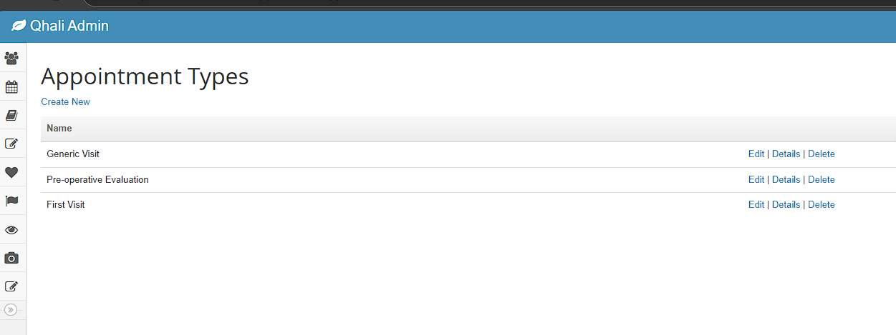
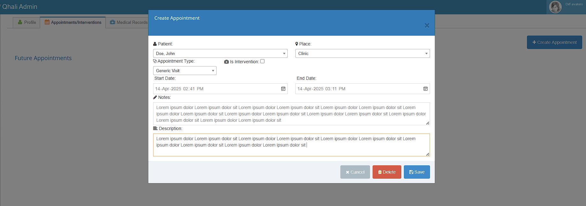
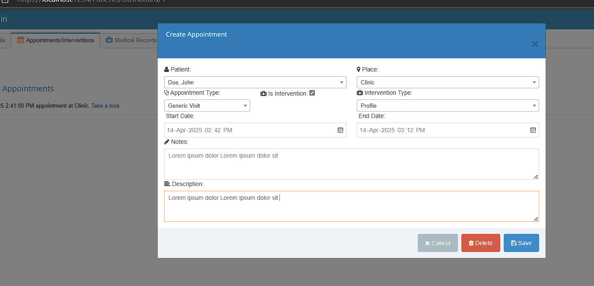
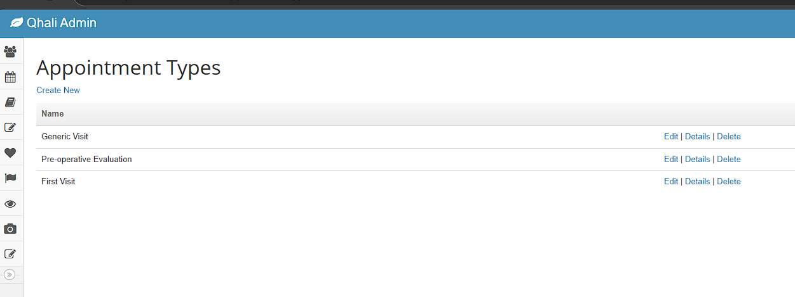

Utilize the smart calendar and appointment system to schedule patient visits and interventions seamlessly. Define appointment types and customize intervention templates for precision.
6. Record Diagnostics and Clinical Notes
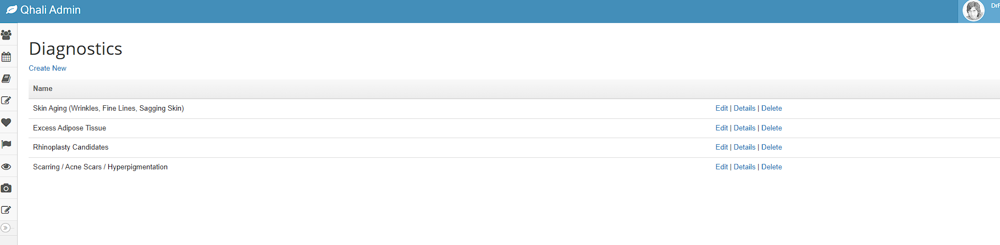
Document diagnostic details and clinical notes directly within the patient’s profile. Maintain a clear, chronological medical history for every patient.
7. Manage Attachments and Consent Forms
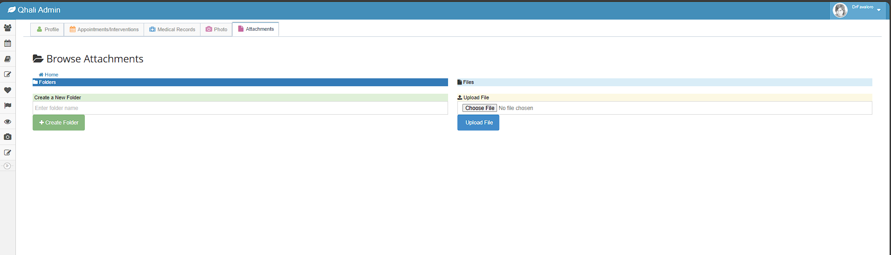 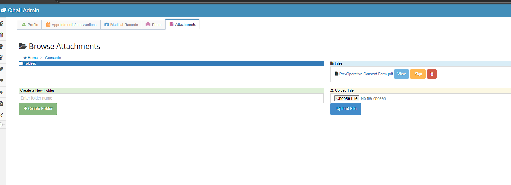 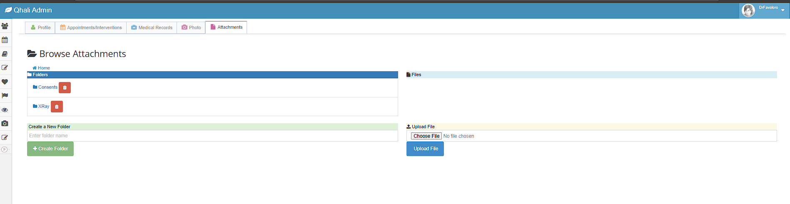 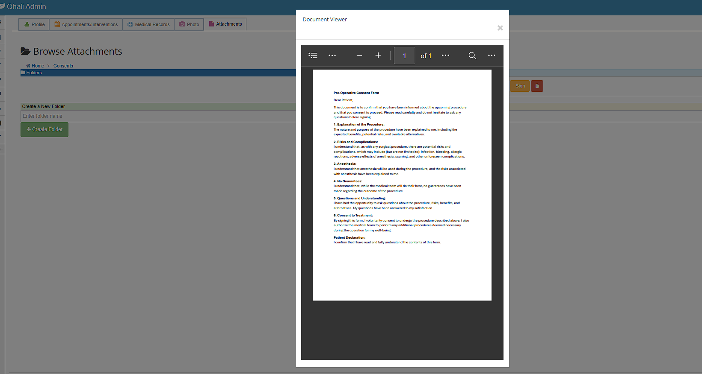 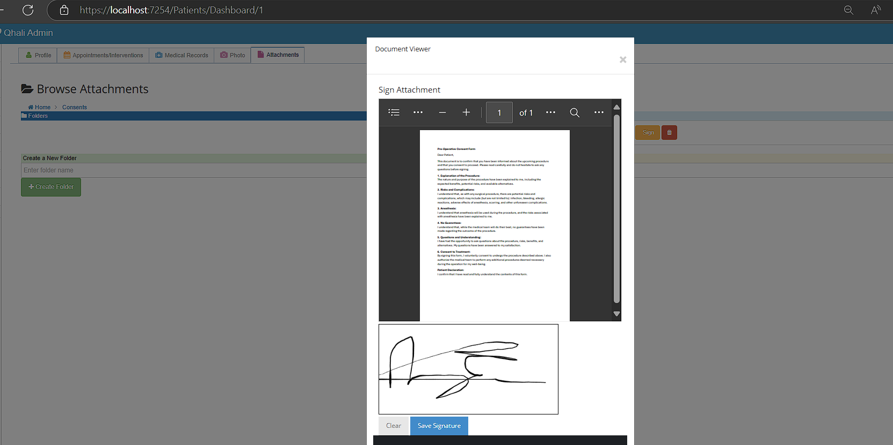 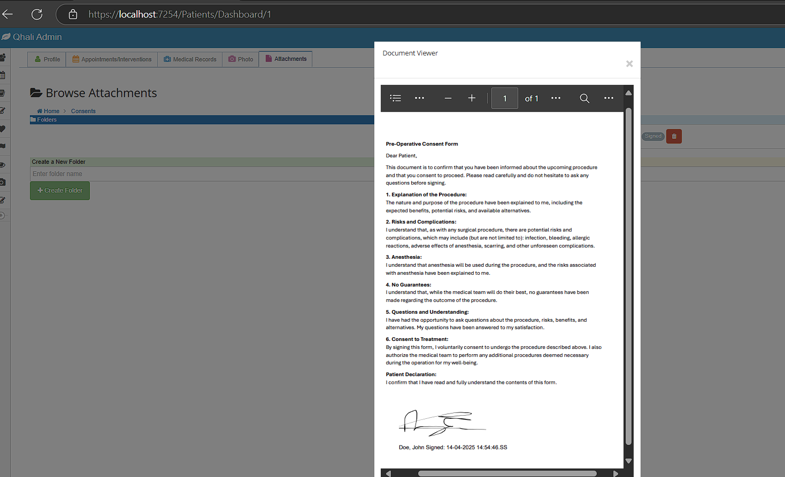Upload, categorize, and securely store patient attachments. Access signed consent forms and relevant documentation anytime, ensuring legal and clinical compliance.
8. Document Patient Photos and Compare Results
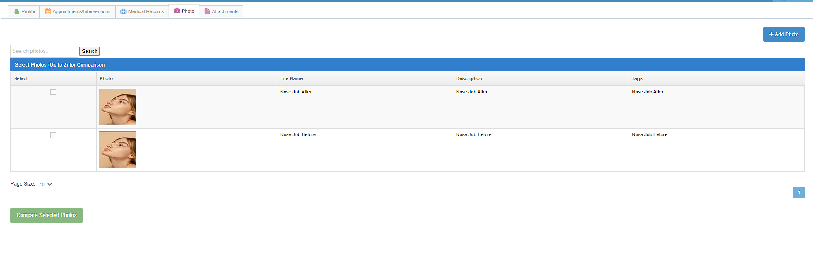 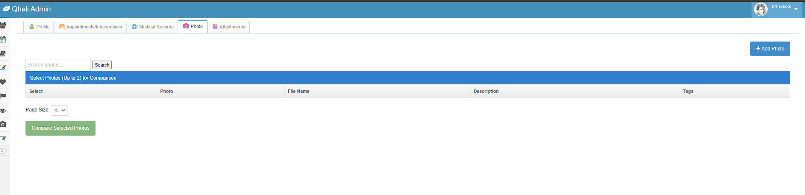 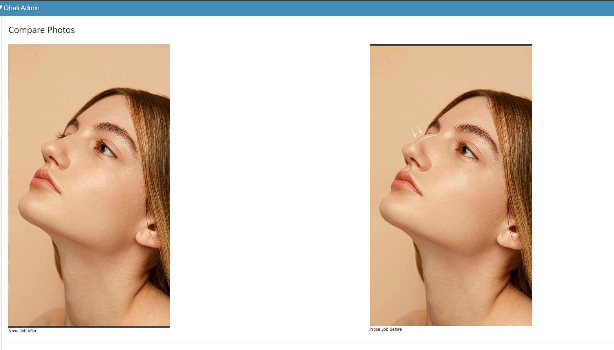Capture and compare patient photos over time to visually document treatment progress and outcomes. Offer patients clear, professional visual records of their care journey.
9. Finalize and Maintain Medical Records

Keep comprehensive, up-to-date medical records. Ensure all patient interactions and clinical actions are properly documented for future reference and audits.